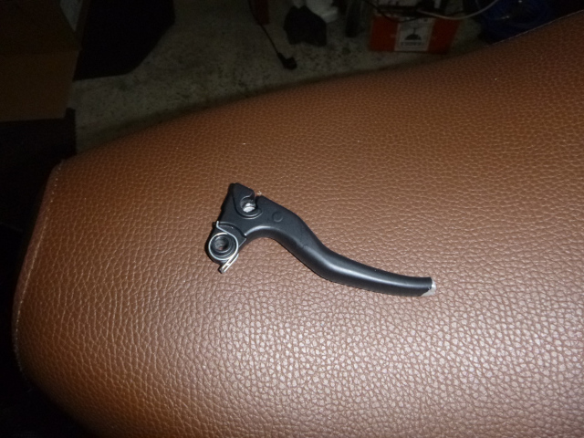
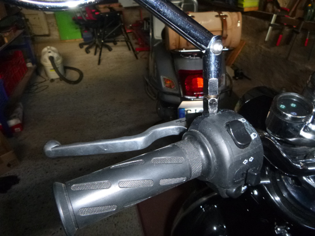
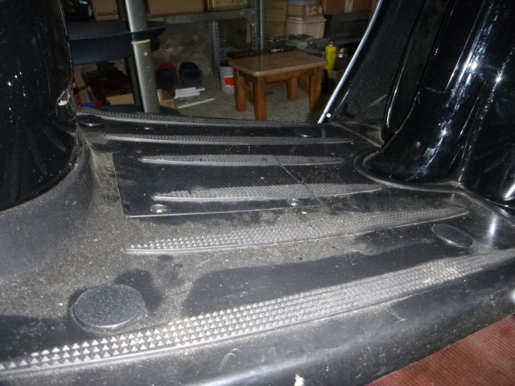
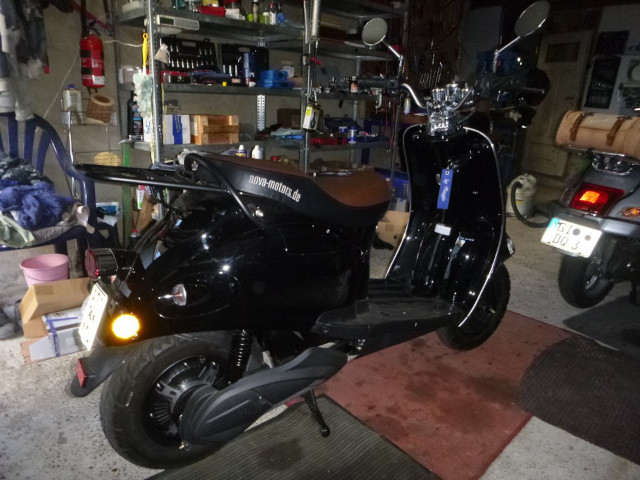

Nein, es ist noch keinesweg vorbei - die Sache mit einem Elektro-Roller.
Zwar hat Nachbarin Doris ihren kleinen E-Roller vor kurzem verkauft, aber da ist ja noch das baugleiche Exemplar in Ilsdorf bei Reinhard. Gekauft im letzten Jahr und so gut wie gar nicht damit gefahren. Offensichtlich geht es Reinhard exakt so wie schon vorher Doris: Beide wurden mit den Elektro-Rollern nicht warm. Das kann ich zwar überhaupt nicht nachvollziehen, aber was solls, man kann sowas ja nicht erzwingen.
Wie einen jahrzehntealten Scheunenfund krame ich den Roller aus einem Nebenraum der Nebenwerkstatt unter Kabeln, Planen und Kartons hervor. Immerhin hing er aber die ganze Zeit am Ladegerät.
Jedenfalls hab ich den eRetro von Nova-Motors erst mal zu mir nach Hause geholt. Ich werd ihn komplett durchchecken, gründlichst reinigen, ein bisschen verbessern und ihn dann bewegen. Ob ich ihn jemals wieder hergebe - ich denke nicht.

Die Vespa hat wieder Gesellschaft bekommen - wie schön.

Dennoch scheint unsere neue Beziehung unter keinem guten Stern zu stehen: Nach der Abholung hab ich den Roller in unserem Hinterhof abgestellt. Drei Stunden später komme ich wieder dort hin - und sehe den Roller auf der Seite liegen. Offensichtlich hat eine starke Windboe die leichte Chinesin umgeweht - gefördet noch durch den etwas wackligen Stand auf dem unebenen Asphalt. Neben ganz leichten Kratzern am hinteren Blinker gibt es nur diesen einen Defekt: Der abgebrochene linke Bremshebel. Das fängt ja wirklich gut an!!!

Zum Glück kann ich den Schaden mit einem Hebel aus dem Bestand einigermassen beheben. Ist zwar nicht perfekt, aber für den Anfang ist es OK und ich kann fahren. Ich nutze die Arbeit im Lenkerbereich noch, indem ich bessere und schönere Spiegel, ebenfalls aus dem Bestand, montiere.

Weiter geht es mit dem Verschliessen der Löcher im Bodenblech, mit dem Fetten einiger beweglicher Teile, einer Grundreinung, dem Auffüllen der Reifen, dem Behandeln der Sitzbank mit Lederfett und dem Kontrollieren und Nachziehen der Schraubverbindungen.

Jetzt sieht der Roller schon viel besser aus und kann nicht mehr mit einem Scheunenfund verwechselt werden.
Und so schliesst sich der Kreis von meinem ersten italienischen Billigroller im Jahre 1967 zu einem chinesischen Billigroller im Jahre 2022. Aber ich hatte schon immer Spaß daran, mit “minderwertigem” Material zurecht zu kommen. Mal sehen, ob es auch mit der Chinesin klappt. Morgen gehts damit auf die Strasse.